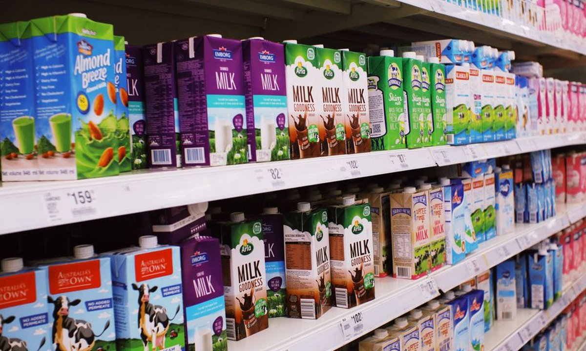
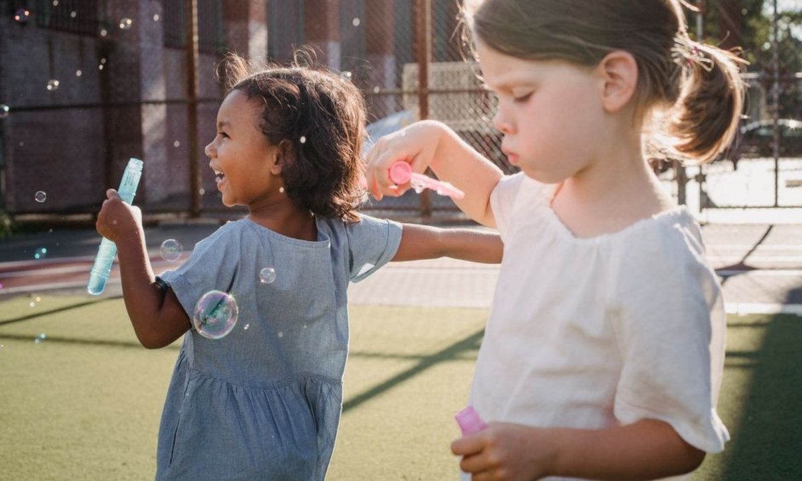

건강·영양 · 평생 뼈의 90%가 이 시기에 만들어집니다

키가 자라는 시기는 곧 뼈에 칼슘을 저축하는 시기입니다. 사람의 뼈 밀도(골량)는 사춘기~만 20세 전후에 평생의 약 90%가 완성되고, 이때 얼마나 채웠는지가 성인이 된 뒤의 뼈 건강을 좌우합니다. 축구처럼 뛰고 점프하는 운동은 이 저축을 돕는 최고의 자극이지만, 재료인 칼슘·비타민D가 부족하면 효과가 반감됩니다.
뼈는 평생 조금씩 만들어지고 흡수되며 리모델링됩니다. 그런데 새로 쌓이는 양이 가장 많은 시기가 바로 성장기예요. 이 시기에 만든 최대 골량(peak bone mass)이 높을수록, 성인기·노년기 골절과 골다공증 위험이 낮아집니다. 즉 지금의 식습관이 수십 년 뒤 뼈 건강의 통장 잔고를 정하는 셈입니다.
성장기(특히 9~18세)는 일생 중 칼슘 요구량이 가장 높은 구간입니다. 한국인 영양소 섭취기준(KDRIs) 기준 권장량은 대략 다음과 같습니다.
| 연령 | 칼슘 권장량(하루) | 쉽게 채우는 법 |
|---|---|---|
| 6~8세 | 약 700mg | 우유 2~3잔 수준 |
| 9~11세 | 약 800mg | 우유·요거트·치즈 조합 |
| 12~18세 | 약 900~1,000mg | 매 끼 유제품 + 녹색채소·두부 |
칼슘이 풍부한 식품: 우유·요거트·치즈, 뼈째 먹는 생선(멸치·정어리), 두부·콩, 시금치·케일 등 진한 녹색채소, 검은깨. 우유 한 잔(200ml)에 약 220~230mg의 칼슘이 들어 있어 가장 효율적입니다.
아무리 칼슘을 먹어도 비타민D가 없으면 장에서 잘 흡수되지 않습니다. 비타민D는 음식만으로는 채우기 어렵고, 대부분 햇빛(자외선)을 통해 피부에서 만들어집니다.
칼슘은 한 번에 몰아 먹기보다 끼니마다 나눠 섭취할 때 흡수율이 좋습니다. 또 짠 음식·탄산음료·과도한 카페인은 칼슘 배출을 늘리니 성장기엔 줄이는 게 좋아요.

뼈는 충격과 하중을 받을수록 더 단단해집니다. 달리기·점프·방향 전환처럼 몸무게가 실리는 '체중부하 운동'은 뼈에 미세한 자극을 주어 골밀도를 높입니다. 축구·줄넘기·농구가 대표적이에요. 반대로 수영·자전거는 훌륭한 운동이지만 뼈 자극 효과는 상대적으로 작습니다.
성장기엔 뼈 끝의 성장판이 약해 무리한 훈련이 손상으로 이어질 수 있습니다. 또한 과도한 운동량 + 부족한 영양(에너지 부족)이 겹치면 오히려 뼈가 약해지고 성장·컨디션에 악영향을 줄 수 있습니다(상대적 에너지 결핍).
성장기는 평생 쓸 뼈를 저축하는 단 한 번의 시기입니다. 공식은 간단해요 — 매일 유제품으로 칼슘 + 야외 활동으로 비타민D + 뛰고 점프하는 운동. 여기에 짠 음식·탄산을 줄이면, 지금 흘리는 땀이 수십 년 뒤의 튼튼한 뼈로 돌아옵니다.
🥗 함께 보기: 유소년 영양 가이드 →